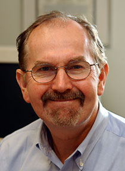

News Archives : 2005 : Richard Flavell To Give Edsall Lecture
October 6, 2005
|
||
|  |
Richard Flavell, FRS
Yale University Professor and Chairman of Immunology; Professor of Molecular, Cellular & Developmental Biology; Investigator, Howard Hughes Medical Institute "Chromosome Dynamics in Gene Expression” Thursday, 13 October 2005
Sherman Fairchild Lecture Hall is located at 7 Divinity Ave, Cambridge MA 02138 |
|
Dr. Richard Flavell’s research is directed towards understanding the interactions between the innate and adaptive immune systems and how these interactions lead to T cell activation. Dr. Flavell uses transgenic and gene-targeted mice to pursue this interest. He has made seminal contributions to a number of important immunological problems, ranging from the function of toll-like receptors in innate and adaptive immunity, to the signaling pathways involved in T cell activation, to the gene regulatory mechanisms involved in the differentiation of T cells. The later studies have led to the remarkable discovery that regulatory elements on one chromosome can directly interact with elements on another chromosome to regulate the expression of gene clusters.
Dr. Flavell was born in England and received his PhD in biochemistry at the University of Hull. After postdoctoral studies with Piet Borst at the University of Amsterdam and Charles Weissmann at the University of Zurich, he held faculty positions at the University of Amsterdam and at the National Institute for Medical Research in Mill Hill, London. After serving as Chief Scientific Officer of Biogen Inc., Dr. Flavell joined the faculty at the Yale School of Medicine, where he is currently Chairman and Professor of Immunology.
Dr. Flavell’s groundbreaking research has been recognized by membership in the Royal Society and the U.S. National Academy of Sciences and by numerous awards and prizes, including the Darwin Trust Prize given by the University of Edinburgh.
 The Edsall Lecture is given annually in honor of John Edsall, a member of the faculty of Harvard University from 1928 to 1973, when he became emeritus but remained engaged in research for more than 20 years. He died in 2002 a few months short of 100 years of age. Dr. Edsall's scientific career started in Edwin J. Cohn’s Department of Physical Chemistry at Harvard Medical School, where he studied the properties of the muscle proteins and of the amino acids. These studies among many others led to the 1943 book by Cohn and Edsall, Proteins, Amino Acids and Peptides as Ions and Dipolar Ions, which became a classic in the field of protein chemistry. During World War II he had a key role in isolating blood proteins for the war effort and developed fibrin foam, a porous form of a fibrin clot for use in neurosurgical procedures. In 1954, Dr. Edsall joined the Faculty of Arts and Sciences and moved to the Biological Laboratories, where he started research on carbonic anhydrase. He was greatly concerned with education. He was a tutor in the biochemical sciences concentration for 40 years and Head Tutor from more than 25 years. He taught a course on biophysical chemistry at the college from 1940 until he retired; the course led to the writing of a textbook with his closest scientific colleague, Jeffries Wyman. He had a leading role in 1954 in the formation of the Committee on Higher Degrees in Biochemistry, a graduate program leading to the PhD degree in biochemistry; the committee became the Department of Biochemistry and Molecular Biology in 1967. Dr. Edsall was also a champion in the fight for the freedom and integrity of science. – Guido Guidotti The Edsall Lecture is given annually in honor of John Edsall, a member of the faculty of Harvard University from 1928 to 1973, when he became emeritus but remained engaged in research for more than 20 years. He died in 2002 a few months short of 100 years of age. Dr. Edsall's scientific career started in Edwin J. Cohn’s Department of Physical Chemistry at Harvard Medical School, where he studied the properties of the muscle proteins and of the amino acids. These studies among many others led to the 1943 book by Cohn and Edsall, Proteins, Amino Acids and Peptides as Ions and Dipolar Ions, which became a classic in the field of protein chemistry. During World War II he had a key role in isolating blood proteins for the war effort and developed fibrin foam, a porous form of a fibrin clot for use in neurosurgical procedures. In 1954, Dr. Edsall joined the Faculty of Arts and Sciences and moved to the Biological Laboratories, where he started research on carbonic anhydrase. He was greatly concerned with education. He was a tutor in the biochemical sciences concentration for 40 years and Head Tutor from more than 25 years. He taught a course on biophysical chemistry at the college from 1940 until he retired; the course led to the writing of a textbook with his closest scientific colleague, Jeffries Wyman. He had a leading role in 1954 in the formation of the Committee on Higher Degrees in Biochemistry, a graduate program leading to the PhD degree in biochemistry; the committee became the Department of Biochemistry and Molecular Biology in 1967. Dr. Edsall was also a champion in the fight for the freedom and integrity of science. – Guido Guidotti |